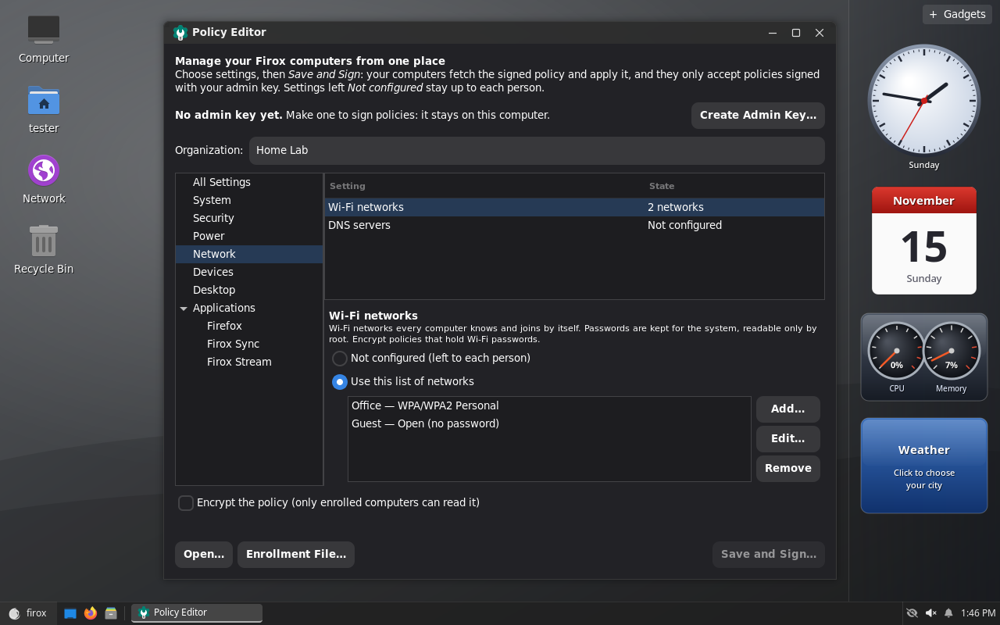

- Why it's built this way
- Getting started
- The 33 settings
- Active Directory and NFS home folders
- On managed computers
- Security
- Command reference
- File formats
- Adding a setting
Policy Editor
Settings are sorted into folders, like Group Policy: pick one on the left, a setting on the right, and choose Not configured (left to each person) or a value. Save and Sign writes the signed policy; Enrollment File makes the file each computer is enrolled with.
It's in the Start menu and in Settings, or run firox-policy.

Why it's built this way
No server, no directory
There's no Active Directory, no management server and no agent to license. A policy is one small signed file you put anywhere your computers can reach: a web server, a git repository, or a shared folder.
Signed, so it can't be faked
Computers trust exactly one admin key, pinned when they're enrolled. A policy signed by anyone else, changed after signing, or older than the last one is refused.
Private when it needs to be
Policies can also be encrypted so only your computers can read them: do this when they hold Wi-Fi passwords. Ordinary users never see secrets either way.
Getting started
- Make your admin key. Open the Policy Editor and click Create Admin Key…. Give it a passphrase; you'll type it each time you sign. Keep a backup of
~/.local/share/firox/policy-admin: it's the only key your computers will trust. - Choose settings and click Save and Sign…. Tick Encrypt the policy first if it holds Wi-Fi passwords.
- Publish the file where your computers can fetch it:
- a web server:
https://example.com/policy.firoxpol - a git repository:
git+https://git.example.com/it/policy.git#policy.firoxpol - a file or network share:
/mnt/share/policy.firoxpol
- a web server:
- Make an enrollment file (Enrollment File…) with that address, and on each computer run:
sudo firox-policy enroll firox.firoxenroll
That's it. Computers check for a new policy when they start and every 30 minutes. To change something, edit, sign and publish again.
The 33 settings
Each setting is either Not configured, and left to each person, or set and locked: people can't change it in Settings, and the computer puts it back if it's changed some other way, at the next check.
| Setting | What it does | Value |
|---|---|---|
| System | ||
Login bannerlogin.banner | A notice everyone must acknowledge on the login screen before logging in (and that SSH shows before the password), e.g. an acceptable-use statement. | a title and a message |
Time zonetime.timezone | The computers' time zone, e.g. America/Chicago or Europe/London. | a time zone, e.g. America/Chicago |
Network timetime.ntp | Keep the clock right by asking time servers on the internet. | On / Off |
Automatic updatesupdates.automatic | Download and install Firox Linux updates by itself. Off is for computers you update by hand. | On / Off |
| Security | ||
Firewallfirewall.enabled | Keep the firewall on, so only the services Firox opens can be reached from the network. | On / Off |
Remote login (SSH)ssh.enabled | Let people log in to this computer over the network with SSH. | Allowed / Not allowed |
Lock the screen when idlescreen.lock_minutes | Lock the screen after this many minutes without use. People can't make it longer or turn it off in Settings. | 1–240 minutes |
Lock when waking from sleepscreen.lock_on_wake | Ask for the password when the computer wakes up. | On / Off |
Powerwashsystem.powerwash | Whether people may Powerwash this computer (delete every account and start again with first-time setup). Not allowed hides it; the computer stays enrolled either way. | Allowed / Not allowed |
Minimum password lengthpassword.min_length | New passwords must be at least this long (when people change their password). | 6–64 characters |
Virus definition updatesvirus.definitions | Keep Virus Scan's virus definitions up to date (downloaded every two hours). | On / Off |
| Power | ||
Screen saverpower.screensaver_minutes | Start the screen saver after this many idle minutes (0 = never). People can't change it. | 0–240 minutes (0 = never) |
Turn off the screenpower.monitor_off_minutes | Turn the screen off after this many idle minutes (0 = never), plugged in or on battery. | 0–480 minutes (0 = never) |
Sleeppower.sleep_minutes | Put the computer to sleep after this many idle minutes (0 = never), plugged in or on battery. | 0–1440 minutes (0 = never) |
| Network | ||
Wi-Fi networksnetwork.wifi | Wi-Fi networks every computer knows and joins by itself. Passwords are kept for the system, readable only by root. Encrypt policies that hold Wi-Fi passwords. | a list of networks |
DNS serversnetwork.dns | The DNS servers every connection uses, instead of the ones the network offers. Separate them with commas. | IP addresses |
| Network/Domain | ||
Active Directoryaccounts.domain | Join every computer to an Active Directory domain (realmd, with SSSD), so people log in with their domain accounts: on the login screen, click Other user… and type the user name. Home folders are made at the first login. The join account's password is used only to join; encrypt policies that hold it. Removing this setting leaves the domain. | domain, join account, its password, put computers in, computer name, who may log in |
NFS home foldersstorage.nfs_homes | Mount home folders from an NFS server on every computer, when they're first used (systemd automount). With “Domain users' home folders are here”, people who log in with a domain account get MOUNT/username as their home folder; it has to exist on the server and belong to them. Kerberos security needs Active Directory set too; with user IDs (sec=sys), use the UID numbers from Active Directory so they match the server's. | server, export, mount at, nfs version, security, extra mount options |
| Devices | ||
Printersdevices.printers | Printers every computer has, added driverless (IPP Everywhere): most network printers made in the last ten years work. | a list of printers |
USB drivesdevices.usb_storage | Whether USB drives (memory sticks, external disks) can be used. Blocked takes effect from the next drive plugged in; keyboards, mice and other USB devices aren't affected. | Allowed / Blocked |
Bluetoothdevices.bluetooth | Turn Bluetooth on or off (headphones, mice, phones). | On / Off |
| Desktop | ||
Lookdesktop.theme | The desktop's look for everyone. People can't switch it in Settings. | Classic / Modern / Glass |
Wallpaperdesktop.wallpaper | The desktop and lock screen picture. People can't change it. An https:// address is downloaded by each computer; a path must already be on them (e.g. /usr/share/backgrounds/...). | an https:// picture or a path |
| Firefox | ||
Home pagefirefox.homepage | The page Firefox opens at start and with the Home button. People can't change it. Firefox picks it up the next time it starts. | an https:// address |
Bookmarksfirefox.bookmarks | Bookmarks in a “From your organization” folder on Firefox's bookmarks toolbar. People can't change them. | a list of bookmarks |
Private browsingfirefox.private_browsing | Whether Firefox's private windows can be opened. | Allowed / Not allowed |
about:configfirefox.about_config | Whether Firefox's advanced settings page (about:config) can be opened. | Allowed / Not allowed |
Saving passwordsfirefox.password_manager | Whether Firefox offers to save passwords. | Allowed / Not allowed |
Developer toolsfirefox.developer_tools | Whether Firefox's developer tools can be opened. | Allowed / Not allowed |
Installing add-onsfirefox.addons | Whether people can install Firefox add-ons. Firox's own (web apps) stays either way. | Allowed / Not allowed |
DNS over HTTPSfirefox.dns_over_https | Whether Firefox looks up web addresses over an encrypted connection. Locked either way. | On / Off |
| Firox Sync | ||
Syncing folderssync.allowed | Whether Firox Sync can keep folders the same between computers. Not allowed turns it off and keeps it off. | Allowed / Not allowed |
| Firox Stream | ||
Hostingstream.allowed | Whether other computers may stream this one with Firox Stream. Not allowed turns it off and keeps it off; allowed leaves it to each person. | Allowed / Not allowed |
Active Directory and NFS home folders
Two settings in Network › Domain turn a group of Firox computers into domain members, much like joining Windows PCs to a domain:
- Active Directory joins every computer to your domain with realmd (adcli and SSSD, as
realm joinwould), so people log in with their domain account: on the login screen they click Other user… and type their user name, and the lock screen takes their domain password too. Home folders are made at the first login. You can put the computers in an OU, name them, choose which groups may log in, let people log in with just their user name, and use the UID and GID numbers set in Active Directory. The join account's password is used only to join (typed intorealm, never on a command line) and shows as dots everywhere people can look; the editor asks you to encrypt policies that hold it. Removing the setting leaves the domain and puts the computer's login settings back as they were. - NFS home folders mounts an export on every computer when it's first used (a systemd automount: nothing waits for the server at startup), with the NFS version and security you choose: user IDs (
sec=sys) or Kerberos (krb5,krb5i,krb5p, which use the computer's domain account). Ticked, Domain users' home folders are here gives everyone who logs in with a domain account mount/username as their home folder; local accounts keep theirs. Withsec=sys, also tick Use the UID and GID numbers set in Active Directory so files belong to the same people on every computer and on the server.
The mount point must be under /var, /mnt or /srv (Firox's system folders are read-only), and can't be the local home folders. Computers need Firox with these packages (sssd-ad, adcli, krb5-workstation, oddjob-mkhomedir), which are in the image.
On managed computers
- Security Center shows "Managed by" and your organization's name, and warns if the last check for a new policy failed (the last policy stays in force meanwhile).
- Settings greys out what a policy sets, with a note: Power Options, Screen Saver, Appearance and Desktop Background.
- The login banner appears on the login screen before the user list; people click OK to go on. SSH shows it before asking for a password.
firox-policy statusshows anyone what's in force, from whom, and when it was last checked. Passwords are shown as dots.sudo firox-policy unenrollstops following policies: the settings stay as they are, but people can change them again.
Security
- The signature is what counts. Each policy is signed with your admin key (Ed25519). Encryption alone would prove nothing, since anyone can encrypt to a public key.
- One trusted key. Enrollment pins your key's full fingerprint. A key with the same name but a different fingerprint is refused.
- No replays. Each policy's number is the time it was signed, and a computer refuses one older than the last it applied.
- Fetching: HTTPS certificates are checked, and plain
http://isn't accepted. The policy is signed anyway, so a file share or git mirror is just as safe. - Secrets stay hidden. Wi-Fi passwords are written only to files root can read, and never to the status ordinary users can see.
- Your key stays home. It never leaves the editor's computer. Its passphrase is asked for at every signing and never cached.
Command reference
firox-policy | Open the Policy Editor |
|---|---|
firox-policy status | What policy this computer follows, and what's in force |
sudo firox-policy enroll FILE | Follow the policies an enrollment file describes |
sudo firox-policy update | Fetch and apply the policy now (the timer does this every 30 minutes) |
sudo firox-policy apply FILE | Apply a policy file once, from here (still checks the signature) |
sudo firox-policy unenroll | Stop following policies |
File formats
A policy is JSON, signed (and optionally encrypted) with GnuPG:
{
"format": "firox-policy", "version": 1,
"organization": "Home Lab",
"serial": 1794706138,
"issued": "2026-11-15T01:28:58Z",
"settings": {
"screen.lock_minutes": 10,
"firefox.homepage": "https://intranet.example.com",
"network.wifi": [{"ssid": "Office", "security": "wpa-psk", "password": "…"}]
}
}An enrollment file (.firoxenroll) is JSON holding the organization, the policy's address, your key's fingerprint and public key, and, for encrypted policies, the machines key. On an enrolled computer, /etc/firox/policy/ holds the enrollment and its keyring (root only); /var/lib/firox/policy/ holds what's in force.
Adding a setting
Every setting is one entry in /usr/lib/firox/python/firox_policies.py, which both the editor and the computers read:
Policy("devices.bluetooth", "Devices", "Bluetooth",
"Turn Bluetooth on or off (headphones, mice, phones).",
"bool", apply_bluetooth)A setting has a key, a folder for the editor's tree, a title, a description, a kind of value (on/off, a number, a choice, text, an address, a list…) and the function that applies it, plus one that releases it when a policy no longer sets it. A computer that meets a setting it doesn't know yet reports it and carries on, so newer policies work with older Firox versions.